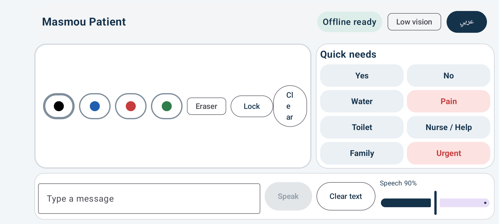
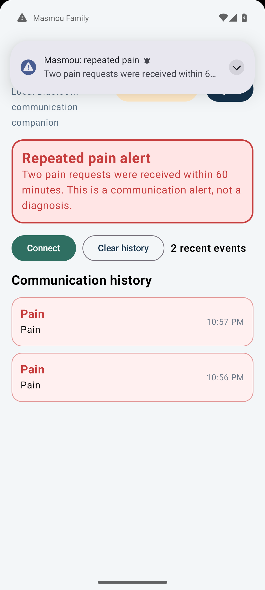

Patient communication
Landscape UI, drawing canvas, color tools, eraser, lock/unlock, protected clear, eight quick needs, typed speech, local TTS and speech-rate control.
ANDROID-FIRST · OFFLINE-FIRST · V1.0
Masmou v1.0 pairs a bedside Patient communication board with a local Family companion for history and alerts. Core Patient communication works without Internet or Bluetooth.
Patient provides a large drawing surface, eight quick needs, typed speech, local TextToSpeech, Arabic/English, low-vision mode and protected bedside controls. Family receives versioned communication events, keeps a bounded local history and raises a repeated-pain alert.
Patient SHA-256 · Family SHA-256 · Windows test SHA-256
v1 implementation & verification report
Production builds retain the BLE transport. Release regression testing uses an emulator-only debug transport so the Patient/Family workflow can be tested without physical BLE hardware.


RELEASE EVIDENCE
Landscape UI, drawing canvas, color tools, eraser, lock/unlock, protected clear, eight quick needs, typed speech, local TTS and speech-rate control.
Arabic/English switching, RTL/LTR, low-vision mode, high-contrast touch targets, semantics and haptic feedback.
Two Pain events within 60 minutes produce persisted history, repeated-pain UI state and a high-importance Android notification.
Family history and alert state survive force-stop/restart. Patient remains usable when the remote transport is unavailable.
Current release QA uses emulator-5554 per user instruction. OnePlus 7 is excluded from current and future QA runs. Production BLE source is included and build/lint verified; this release does not claim a fresh physical-device BLE certification.
ENGINEERING STATUS
Kotlin · Compose · localization · landscape base
responsive layout · RTL/LTR · bedside regions
drawing · colors · eraser · lock · protected clear
eight needs · local speech · typed communication
low vision · semantics · haptics · strong contrast
separate companion · event history · alert UI
GATT server/client · versioned protocol · reconnect path
bounded SQLite history · timestamps · 2 Pain / 60 min
keep-awake · immersive UI · lifecycle recovery
emulator regression · Arabic · low vision · persistence · alerts
A5-class device · retained stylus · bedside hardware · BOM/OEM
CONTINUE WITH CONTEXT
C:\Users\Administrator\masmou-boardC:\xampp\htdocs\masmou-boardFuture changes should start from GitHub main and the current handoff.
.\gradlew.bat :core-model:test
.\gradlew.bat :app-patient:assembleDebug :app-patient:lintDebug
.\gradlew.bat :app-family:assembleDebug :app-family:lintDebugInitial Gradle dependency downloads require Internet; the Patient communication experience itself does not.